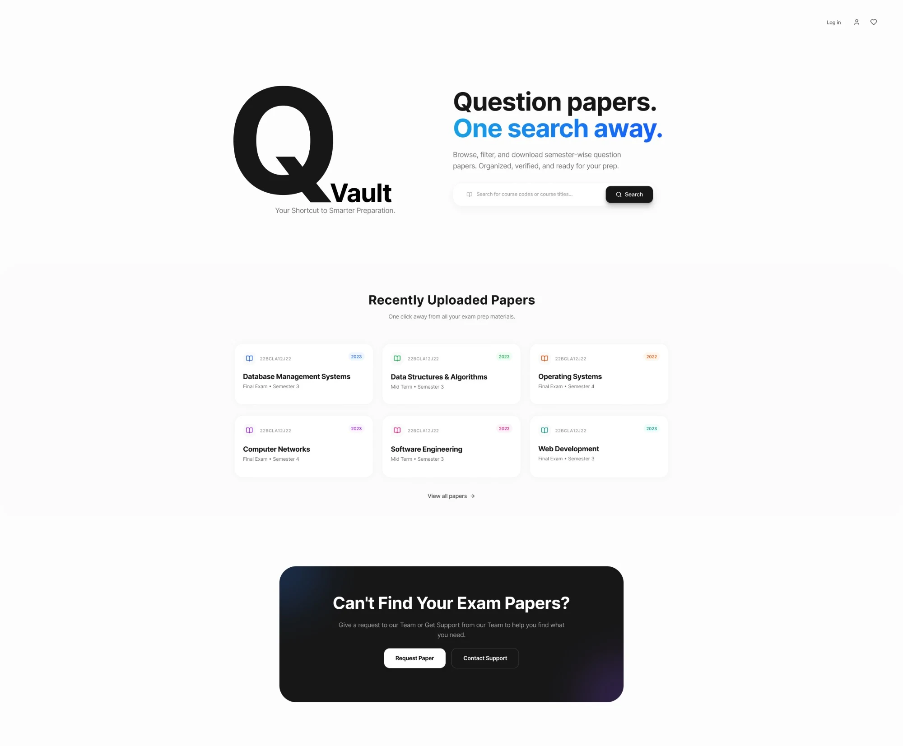
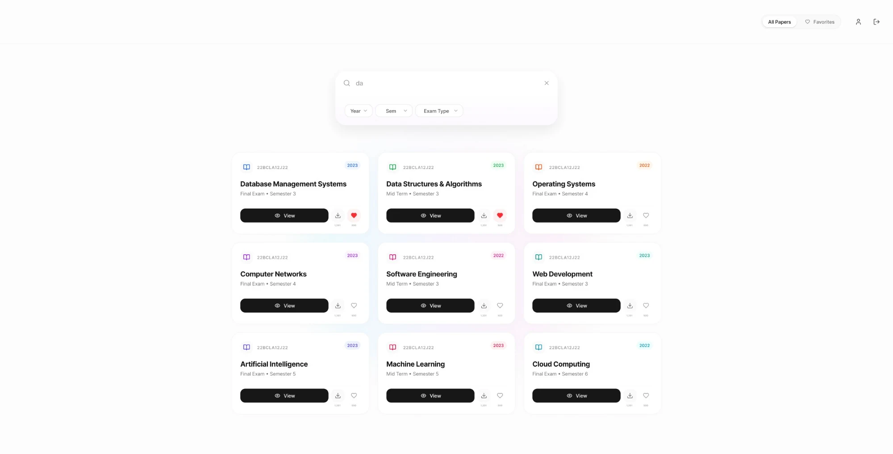
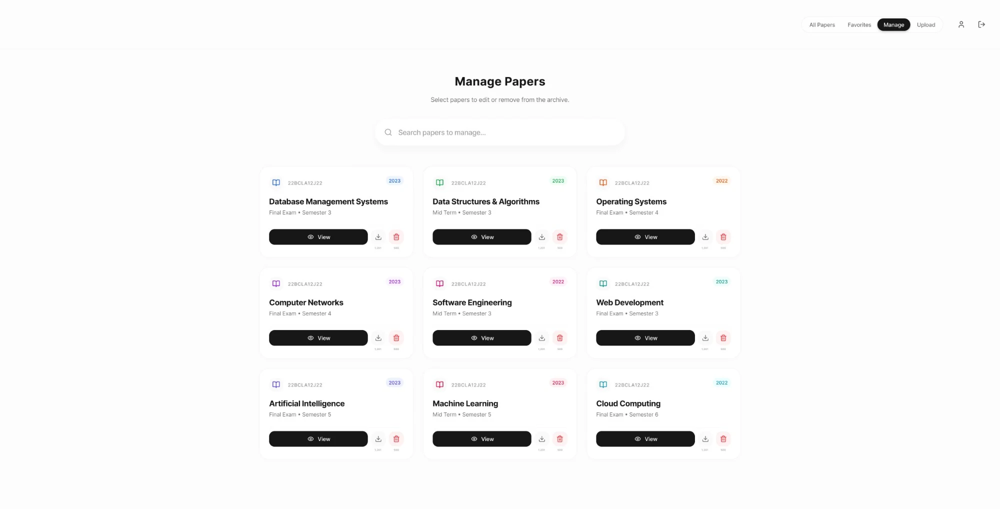
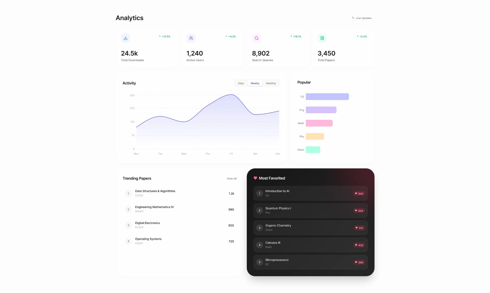

QVault
A question paper archive for exam prep: browse, filter and download semester-wise papers, with a manage view for the people who run it and an analytics page showing how it is used.
- Role
- UI/UX Design
- Status
- Live
The brief
QVault's promise is written on its own home page: browse, filter and download semester-wise question papers that are organised, verified and ready for your prep. The design had to make that feel like one search away for students, and give the people who run the archive a simple way to keep it in order.

A home page that starts with the search
The home page opens on a large Q mark and the line “Question papers. One search away.”, with a search for course codes or titles right beside it. Below, the most recently uploaded papers sit in a tidy grid, and a dark panel at the bottom offers a way to request a missing paper or contact support.

Narrowing the archive
A search box and three dropdowns for year, semester and exam type narrow the archive down. Each paper card shows its course code, title, exam type, semester and year, with a clear View button, a download and a favourite, and the figures beneath the icons show how often each has been used.

A manage view for the people who run it
Staff get a separate Manage view with the same grid and its own search. The favourite on each card is swapped for a delete action, and the navigation gains Manage and Upload tabs, so keeping the archive in order sits in the same place as using it.

Seeing how the archive is used
An analytics page gathers total downloads, active users, search queries and total papers into four headline figures, with an activity chart that switches between daily, weekly and monthly. It also lists the most popular subjects, the trending papers and, in a dark panel that stands apart from the rest, the most favourited.
Have a project like this?
I take on select freelance and contract work. Happy to talk about what you’re building.